Documents et réglages : trois retouches
Relevé du 24 novembre 2026 sur une copie locale de la tête de chantier-voix-offre (ff1ee21), compte de démo inventé. Toutes les images viennent des vraies pages ; les « après » sont ces mêmes pages retouchées à l'écran, rien n'est codé. Tes choix se posent sous chaque image ; « Copier le texte », en bas, les rassemble.
LC-3 : la liste trop longue
Ta remarque : « la liste des règles est trop longue ; simplifier, ou ranger les détails dans une catégorie à part ». Le pas LC-3 touche deux listes, et le dépôt ne dit pas laquelle tu visais.
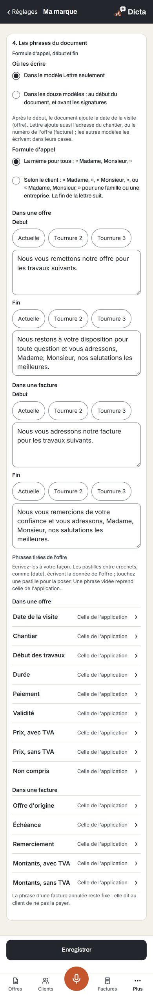
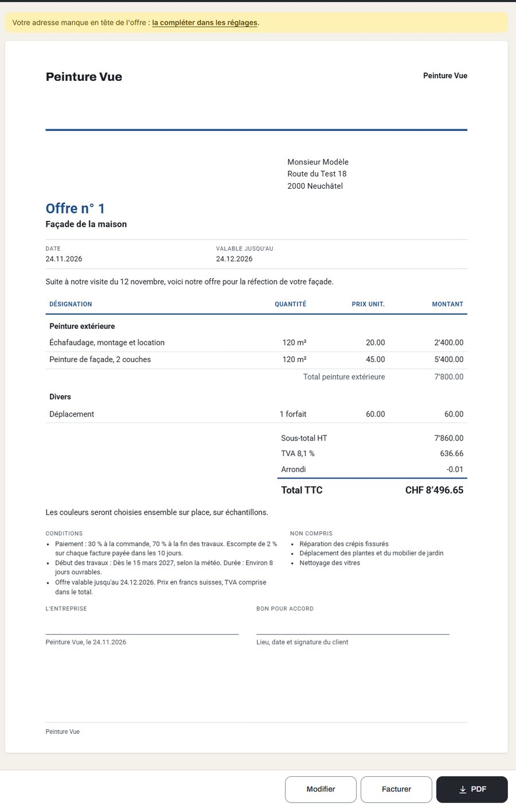
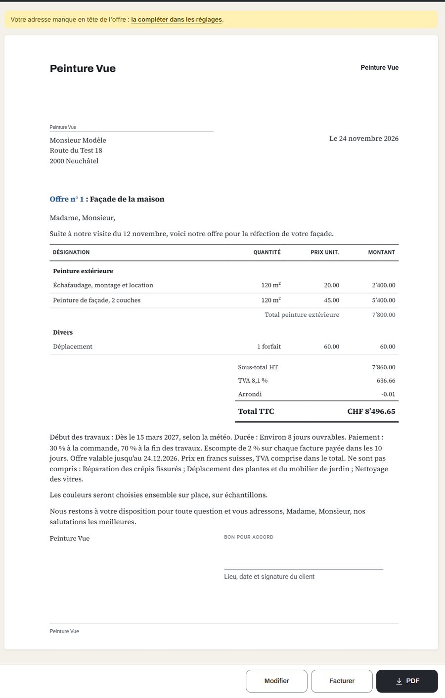
L0. De quelle liste parlais-tu ?
Les captures de téléphone sont réduites ; touche une image pour la voir en grand. La suite de cette section propose pour la liste 1, la plus longue. Si c'est la 2, je refais une proposition pour elle avant tout code.
Ce que mesure la liste 1
D'après le gabarit (_reglages_marque.html.twig, ligne 70), la section 4 paraît aussi dans l'étape « marque » de l'assistant du premier lancement. Non vérifié à l'écran.
A. Une catégorie à part : la rubrique « Phrases du document »
Ma marque garde l'aspect : logo, couleur, modèle. Les mots partent dans une rubrique à eux, sous Ma marque dans les réglages, telle qu'elle est aujourd'hui. Ma marque passe de 4'165 à 1'938 px.
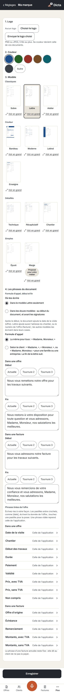
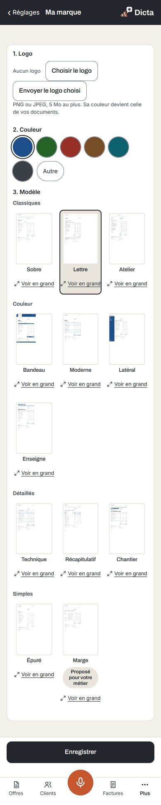
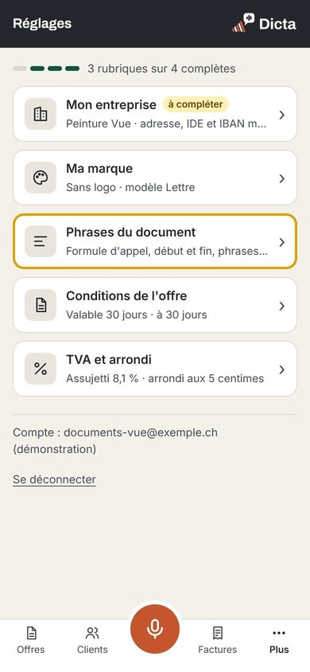
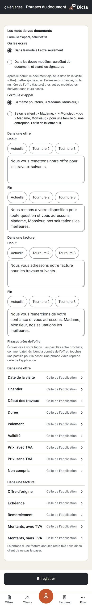
B. Simplifier sur place : les 14 phrases derrière une ligne
La section 4 reste dans Ma marque. Les 14 phrases tirées de l'offre (date de la visite, chantier, début, durée, paiement…) passent derrière une seule ligne qui ouvre leur page. Ma marque passe de 4'165 à 3'338 px.
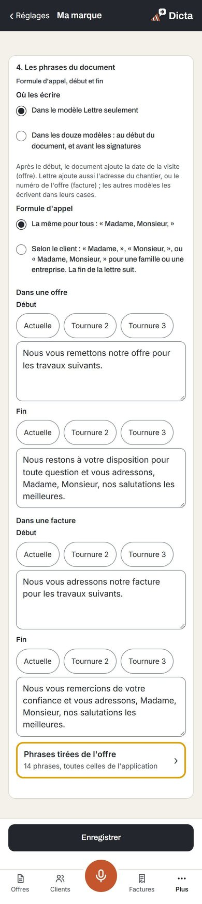
L1. Ma marque : quelle proposition ?
L2. Avec A, l'assistant du premier lancement montre-t-il encore les phrases ?
OV-3 : le filigrane « Aperçu »
Pourquoi il est là
- Il marque une facture pas encore créée : la vignette de la feuille « Facturer » et la page d'un brouillon de facture. Son numéro y est provisoire ; il se fixe à « Créer la facture ».
- Aucun PDF ne le porte. Une fois créée, la facture sort sans filigrane, démo ou pas.
- Il ne marque pas les démos. Preuve : depuis la démo du relevé, « Créer la facture » a sorti la facture 2026-001 ; son PDF ne porte ni « Aperçu », ni « Démonstration », ni « exemple » (texte lu par PyMuPDF).
- Le retirer n'ouvre donc rien : une démo sort déjà une vraie facture sans marque. La marque « Démonstration » est décidée pour l'espace de démonstration des commerciaux (Origin 557) et n'est pas codée.
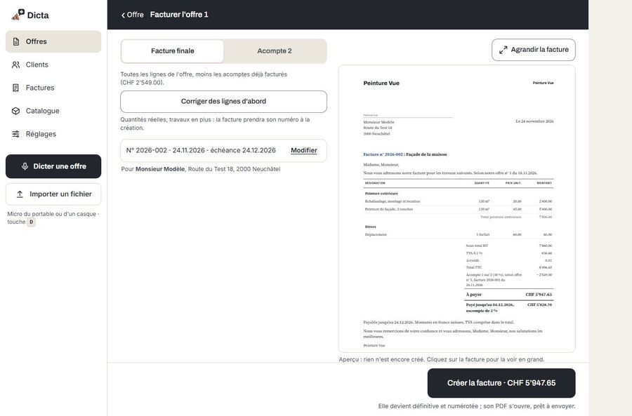
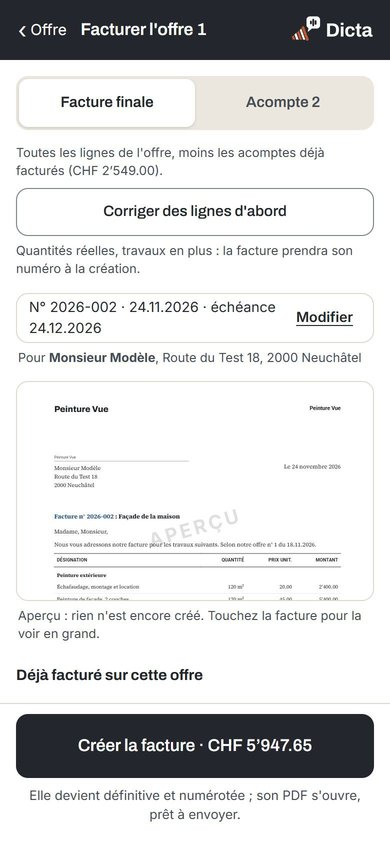
O1. Le filigrane
O2. Ta crainte reste vraie sans le filigrane : une démo sort de vraies factures. On la traite où ?
Une démo dure quelques jours, dix dictées par jour au plus. Marquer ses PDF empêche de facturer avec, et montre au prospect un document moins propre que celui qu'il aura.
Variantes : quantité et unité reprises
Ta règle : une variante reprend par défaut la quantité et l'unité de la ligne qu'elle remplace (50 m²), modifiables ; l'article et le prix changent.
Ce que fait l'application aujourd'hui
Relevé par l'interface, variante de « Rebouchage et ponçage des murs », 42 m² à 9.00 :
| Ajout | Aujourd'hui | Avec ta règle |
|---|---|---|
| Produit de même unité (Peinture anti-moisissure, m²) | 42 m² | 42 m² |
| Produit d'une autre unité (Laquage de porte, à la pièce) | 1 pce à 160.00 | 42 m² à 160.00 (voir V1) |
| Ligne tapée dans la recherche | 42 forfait | 42 m² |
| Ligne libre détaillée, unité laissée | 42 forfait × 34 = 1'428.00 | 42 m² × 34 = 1'428.00 |
Deux défauts : la quantité reprise ne se voit nulle part avant l'ajout, et une ligne libre en variante prend l'unité « forfait ».
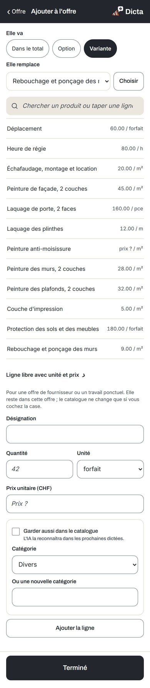
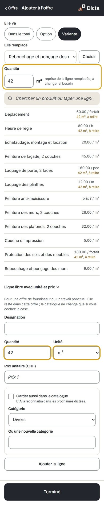
V1. Un produit d'une autre unité (Laquage de porte, à la pièce) en variante de 42 m²
Ta règle donne 42 m² au prix de la pièce : 42 × 160.00 = 6'720.00, un total faux tant que l'artisan ne corrige pas. La revue du chantier des options avait choisi « 1 pièce » pour cette raison (« 42 m² ne font pas 42 rouleaux »). Je le dis une fois ; à toi de trancher.
V2. La quantité reprise, visible et modifiable avant de choisir le produit
Avec A, la quantité tapée vaut pour le produit touché ensuite. Sans ligne à remplacer, la variante devient une option (règle actuelle) et le champ disparaît.
V3. Ligne libre en variante : quantité et unité de la ligne remplacée, préremplies (correction du « forfait »)
Hors de ce chantier
- La marque « Démonstration » des PDF (Origin 557) et le code QR de démonstration (Origin 509), sauf choix « Ici » en O2.
- Le contenu des 14 phrases et leurs tournures : on range, on ne réécrit pas.
- La dictée des variantes : l'extraction donne déjà la quantité de la ligne remplacée (relevé du chantier des options, non revérifié ici).
Chantier sans tâche Origin à ce jour : dis-moi s'il faut la créer.
Copier mes réponses
Ce texte se remplit avec tes choix. Copie-le et colle-le dans la conversation.
Copié.